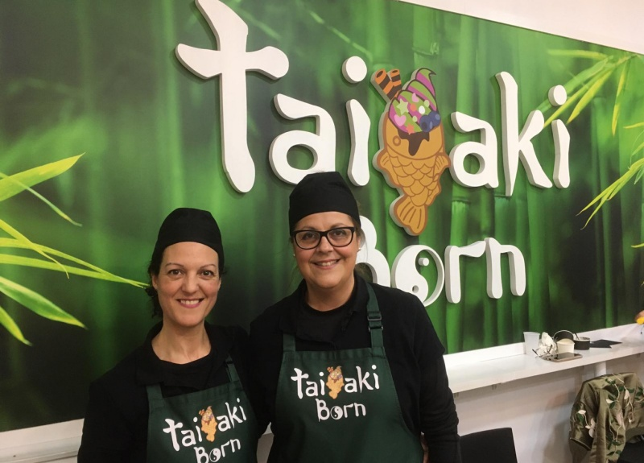
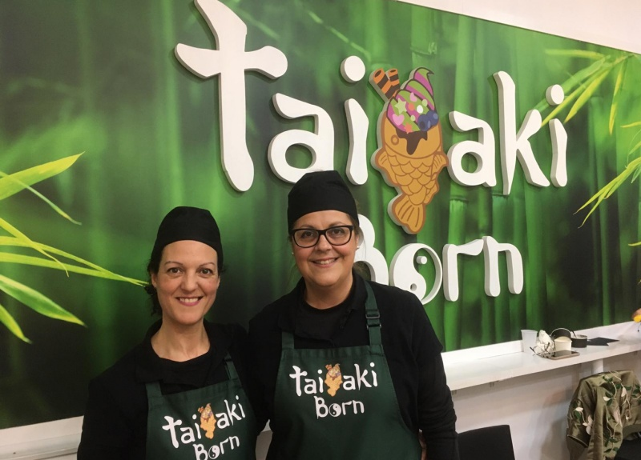

Taiyaki Born es la primera tienda especializada en 'taiyakis' que abre en Barcelona. ¡Por fin podremos saborear este postre japonés! La cultura japonesa y, sobre todo, su gastronomía se están integrando cada vez más en nuestra ciudad, ¡y es que cuanto más la conocemos más nos enamora! Esto fue lo que les pasó a las dos socias de Taiyaki Born: Begoña y Eva quedaron impregnadas de la riqueza del mundo oriental tras un viaje a Japón, y de este surgió la idea de montar su negocio. Taiyaki Born es la primera tienda especializada en 'taiyakis' que abre en Barcelona, ¡por fin! Desde un pequeño local ubicado en el Born, nos acercan este típico postre japonés: un pez, hecho de una masa tipo gofre relleno de lo que más os apetezca, tanto si tenéis el ‘mood’ de dulce como si el cuerpo os pide algo salado. La gama de ingredientes es muy variada (matcha, Nutella, crema pastelera, sobrasada, jamón y queso...), pero si os apetece degustar la verdadera experiencia japonesa, debéis probar el original, relleno de 'anko', una pasta dulce de judía roja. Y si sois de los de buen comer, podéis disfrutar de vuestro taiyaki en cono con helado de sabores muy originales como matcha, chocolate carbón activo y violeta, entre otros. La masa es 100% casera, elaborada de forma artesanal, y trabajan siempre con ingredientes naturales. Además, ¡tienen opciones veganas! En el local también ofrecen bebidas calientes o frías, como un buen 'matcha latte', que acompaña el sabor del 'taiyaki' con gran harmonía. Si os apetece probar esta delicia japonesa no dudéis en hacerles una visita, ¡repetiréis! Y si le echáis una ojeada a su perfil de Instagram, no solo fliparéis con sus fotos, ¡sino que además podréis participar en un montón de concursos y ganar premios deliciosos!
Ir al articulo, Time Out."Taiyaki en Barcelona. Por fin tenemos en Barcelona un establecimiento especializado en Taiyaki donde los elaboran de forma totalmente artesanal."
Ir al articulo, Muy Japones.
 
